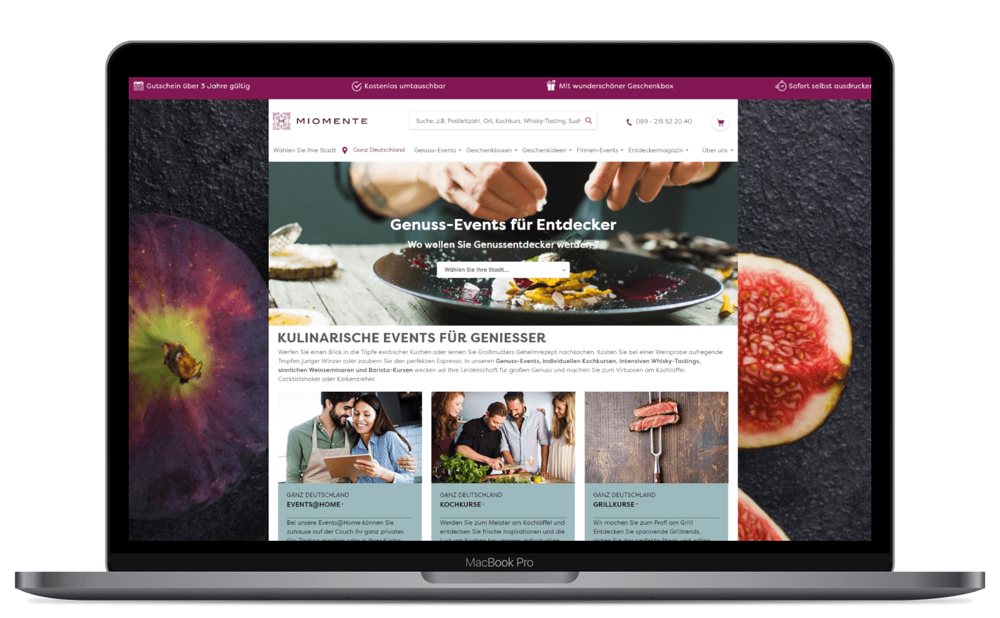
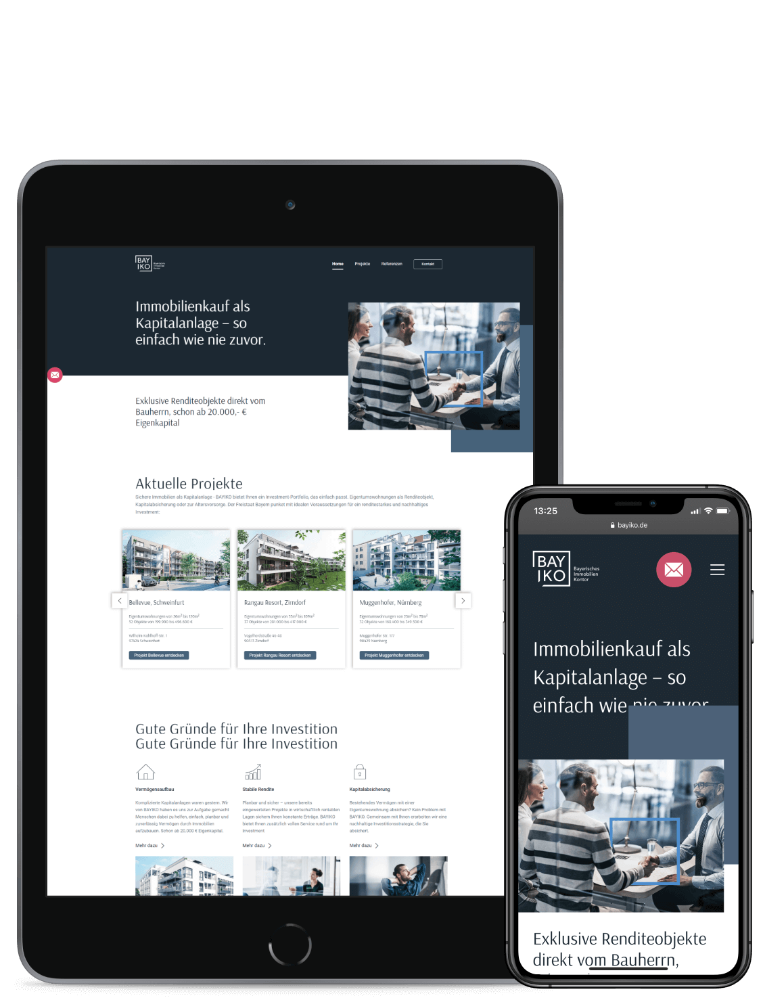
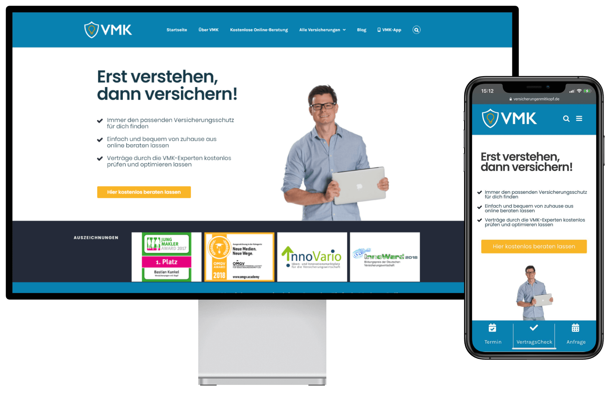
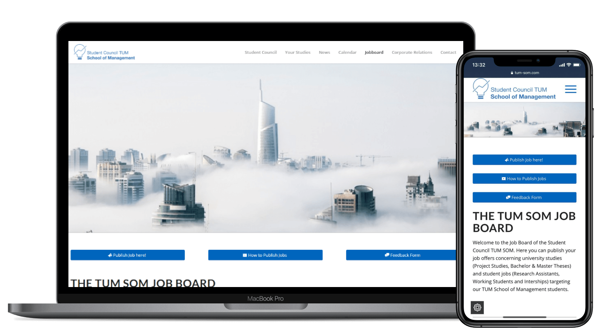
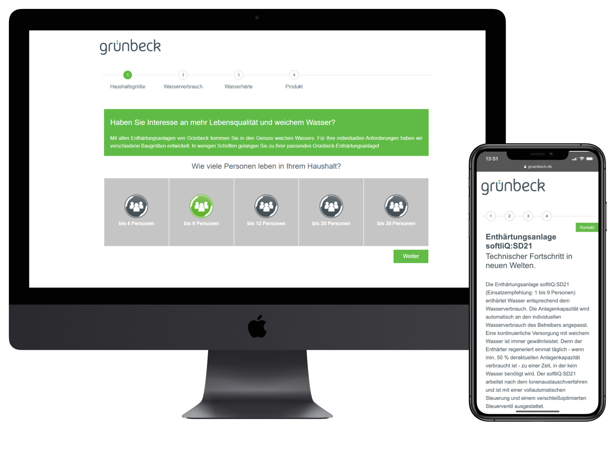
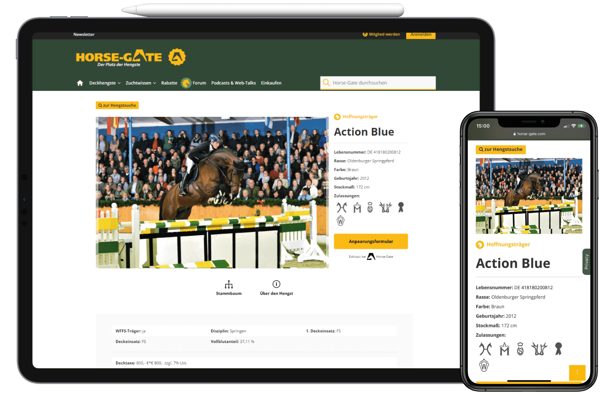
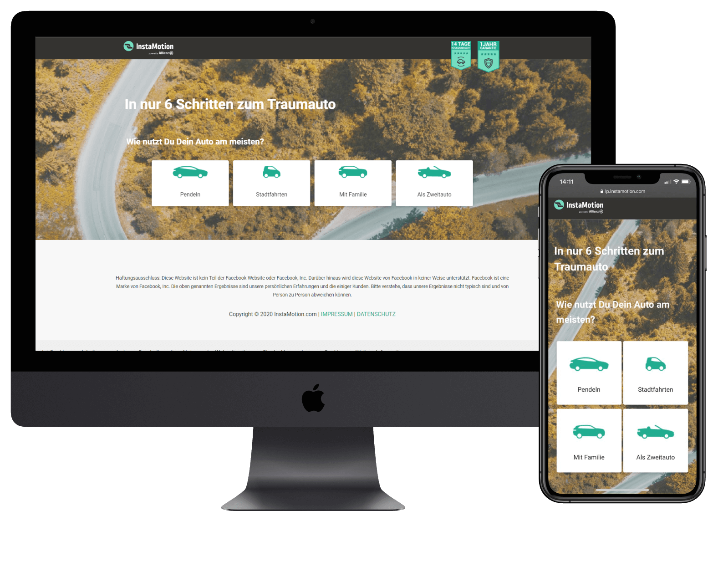
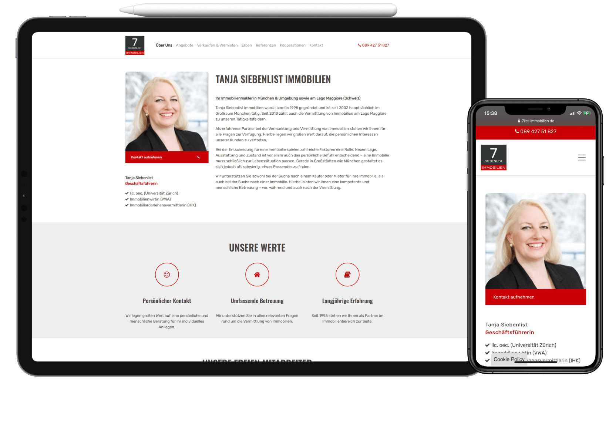
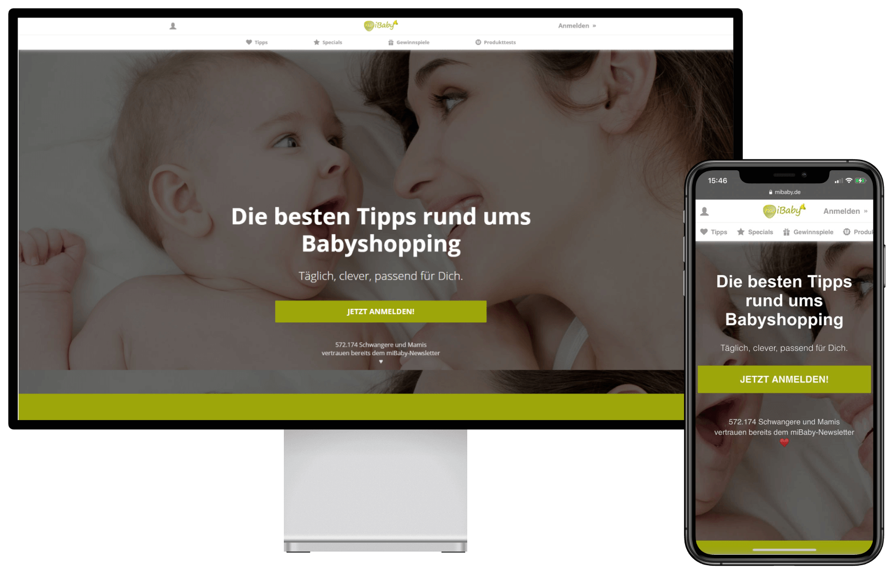

Unsere
Projekte

Miomente GmbH
CRO CONSULTING, WEB DESIGN / PROGRAMMING,
TRACKING
- Magento
- HTML / CSS
- JS
- Google Analytics
- Google Tag Manager
Concept and implementation of full-fledged eCommerce tracking with Google Analytics and Google Tag
Manager. Advice on conversion optimization and programming of the new product page.
View Live Website

Bayerisches Immobilien Kontor GmbH
GOOGLE ADS, HIGH-PERFORMANCE LANDING PAGES
- HTML / CSS
- Google Ads
Concept, implementation and optimization of Google Ads and associated landing pages for lead
acquisition.
View Live Website

Bastian Kunkel – Versicherungen mit Kopf
WEBDESIGN, USER EXPERIENCE, WEBENTWICKLUNG, SEO
&
ANALYTICS
- Wordpress
- HTML / CSS
- JS
Redesign und Relaunch der neuen Versicherungen mit Kopf Webseite auf Wordpress-Basis. Im Rahmen der
Neugestaltung wurde die Webseite auch grundlegend auf Suchmaschinensichtbarkeit und
Geschwindigkeit optimiert.
View Live Website

Student council TUM School of Management
WEBDESIGN, USER EXPERIENCE, WEBENTWICKLUNG, SEO
&
ANALYTICS
- Wordpress
- HTML / CSS
- JS
- PHP
- Laravel Framework
- Algolia Search
Design and development of a job board with backend & advanced search. This enables the Student Council
School of Management at the Technical University of Munich to make hundreds of job postings available
to
the students on the move and on the desktop. In addition, as part of a rebranding, we redesigned the
website, optimized search engine visibility and provided a deeper insight into user behavior with
modern
analytics.
View Live Website

Grünbeck water treatment GmbH
WEB DESIGN, USER EXPERIENCE, WEB DEVELOPMENT
- HTML / CSS
- JS
Development of various features for the Grünbeck website. Among other things, a funnel to help you
find
the right product and an interactive map of Germany to provide an overview of the Grünbeck branches.
View Live Website

Horse Gate
CRO CONSULTING, WEB DESIGN / PROGRAMMING
- HTML / CSS
- JS
- Wordpress
- WooCommerce
Concept and implementation of the new Hengst underside.
View Live Website

Insta Motion
WEBDESIGN
- HTML / CSS
- JS
- Wordpress
Redesign der neuen stadthaus Immobilienmakler
Webseite auf Wordpress Basis inkl. Anbindung an Immoscout24.
View Live Website

7list real estate - real estate agent
from
Munich
WEBDESIGN
- HTML / CSS
- JS
- Wordpress
Redesign of the new 7list real estate
website based on Wordpress.
View Live Website

miBaby GmbH
SEARCH ENGINE OPTIMIZATION
- OnPage SEO
Redesign of the new 7list real estate
website based on Wordpress.
View Live Website